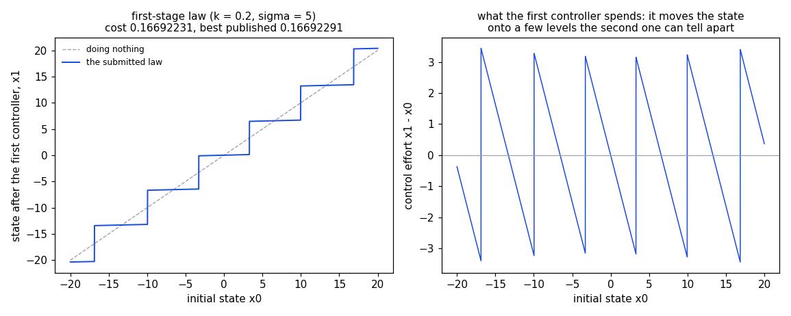

witsenhausen-classic
Witsenhausen's counterexample · solved 4 of 4 agent attempts pass
more
The gate, J < 0.1675, is the level of the numerical literature of 2001-2009. Not a frontier tier, by measurement: the naive baseline (an odd piecewise-linear staircase with four sloped steps per side, 11 numbers, scipy Nelder-Mead and Powell against the grader at reduced resolution) is below 0.1675 after 8 seconds and ends at J = 0.16692282 after ten minutes, which passes every rung of the ladder, below_record included. Kept as the tier that proves the grader and the contract.
Gate. per-seed success is the `below_0p1675` rung of this benchmark's ladder ['beats_affine', 'beats_two_point', 'below_0p20', 'below_0p170', 'below_0p1675', 'record_level', 'below_record'] (`--success-mode below_0p1675`), not the evaluator's default flag; the task is solved when the success rate over the grader's held-out seeds is `>= 1`
Axes: family:synthesis, problem:witsenhausen, instance:k0.2-sigma5, gate:below_0p1675, grading:exact-cost-no-rollout
Each video or figure re-runs the attempt's final controller through the task's own evaluator on a public seed (never the grader's held-out ones). The table under each one is the official grade on the held-out seeds.


base| criterion | graded | needed |
|---|---|---|
| base:below_0p1675 | 1.000 | ≥ 1.000 |
The agent's final message
The controller at `/app/work/controller.py` costs **J = 0.1669223109** under the grader, which passes the `below_0p1675` gate and every other rung of the ladder, including `below_record`. The official evaluator gave the same cost on seeds 0–4 and on 12 other seeds (1000–1011). I stopped about 13 minutes into the 60-minute budget because the submission already passes. ## The law It is an odd, slightly sloped staircase: `x1 = sign(x0) · F(|x0|)`. On each step, with `d = |x0| − level`, `F = level + slope·d + curvature·d² + cubic·d³`. | Step | \|x0\| range | Level | Slope | | --- | --- | --- | --- | | 0 | 0 – 3.295 | 0 | 0.0355 | | 1 | 3.295 – 9.964 | 6.566 | 0.0351 | | 2 | 9.964 – 16.872 | 13.308 | 0.0341 | | 3 | 16.872 – 24.169 | 20.382 | 0.0329 | | 4 | 24.169 – 32 | 27.912 | 0.0310 | - **Bending terms:** the curvature and cubic terms are tiny (about 1e-4 and 2e-6). - **Tail:** beyond 32 the staircase continues with flat steps 8 wide; this region has probability 1.6e-10 and no measurable effect on the cost. - **File contents:** 4 breakpoints and a 5×4 table, evaluated in a vectorised way with no state, plus a docstring explaining each number. ## How the numbers were found I wrote an optimiser for the exact cost of the sampled law, using the same cell-moment and quadrature formulas as the grader, with an analytic gradient. It ran BFGS and then Newton on the breakpoints and the per-step polynomial coefficients. No neural network or learned policy is involved. ## Evidence i…
Shown: public seed 0 (base); this episode passes the below_0p1675 rung. This episode: valid yes, consistent yes, cost 0.167, gap_to_record -5.99e-07, relative_gap -3.59e-06, stage1_cost 0.135, stage2_cost 0.0321, error_estimate 2.08e-09, n_jumps 14, law_seconds 0.00188. Left: where the first controller moves each initial state. Right: what that costs it. The cost is graded to eight digits.
controller.py · trial witsenhausen-classic__afTcedL